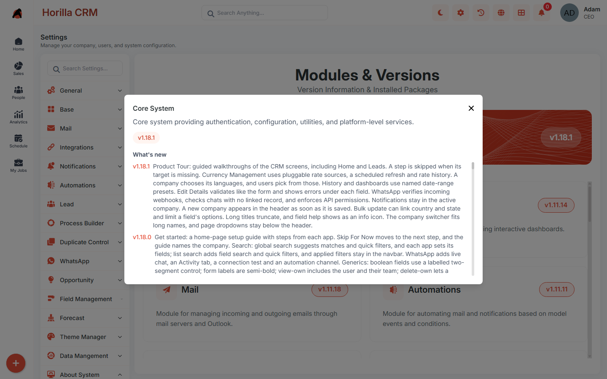
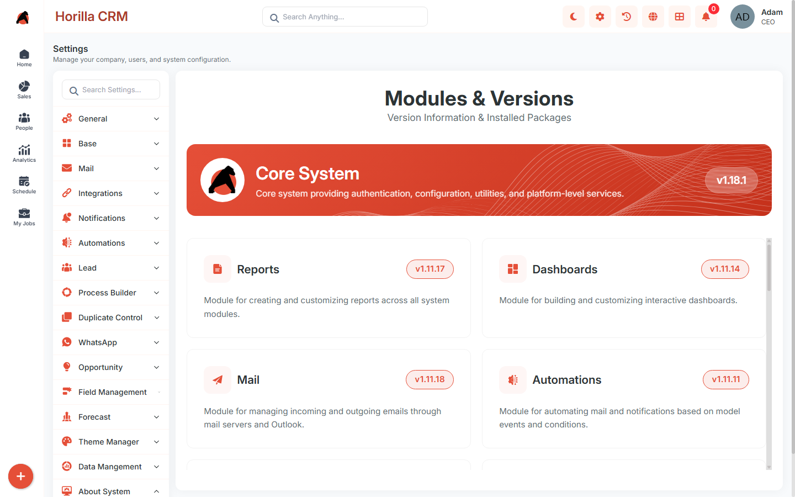

Overview
- The Version Info section lets users view the current version details for the Core System and for the installed modules.
- It also provides release information for the latest and previous versions.
- Users can review what each release adds, including new features, improvements and updates.
Functionality
Version Info Page
The page displays:
- A Core System version card.
- Installed module version cards.
- A version number for each item.
- A short description of each system or module.
View Version Details
Clicking a version card opens a Version Details popup.

The popup shows:
- The name of the system or module.
- The current version.
- A description.
- A version-by-version update history.
Version History
The Version Details popup shows both the current version's updates and those of previous versions.

This lets users review changes across multiple versions.
Purpose
The section helps users:
- Identify the installed version.
- Review newly added features.
- Understand improvements and updates.
- Check the changes made in previous versions.
Expected Behaviour
- The Version Info page should list the available version cards.
- Clicking a card should open detailed version information.
- Users should be able to see what changed in the current and in earlier versions.